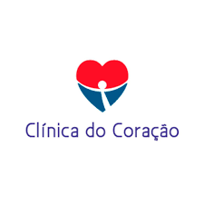

A saúde do coração é uma prioridade que não deve ser negligenciada, considerando a sua importância vital no funcionamento do corpo humano. Por isso, entender quando e como buscar a orientação de um especialista em cardiologia é essencial. A Clínica Rede Mais Saúde, uma renomada clínica popular, se dedica a oferecer serviços de qualidade e informações valiosas para a promoção da saúde cardíaca em Belém, Augusto Montenegro, Ananindeua e regiões adjacentes. Este artigo visa esclarecer dúvidas comuns sobre a cardiologia, o papel do cardiologista, as condições tratadas por este especialista, os exames importantes e os sinais de alerta que indicam a necessidade de uma consulta médica.
